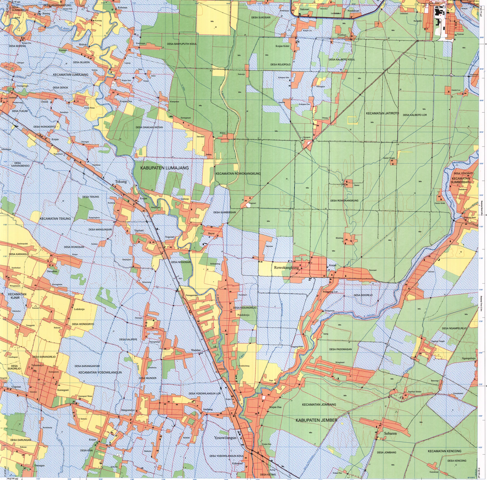

Nama rupabumi
Nama yang diberikan pada unsur rupabumi, baik unsur alami maupun unsur buatan.
Toponimi membahas nama rupabumi, sedangkan pelabelan kartografis mengatur bagaimana nama tersebut ditempatkan dan dibedakan pada peta. Nama yang benar tetap harus disajikan secara terbaca dan tidak menimbulkan keraguan lokasi.
Nama yang diberikan pada unsur rupabumi, baik unsur alami maupun unsur buatan.
Nama yang telah melalui proses pembakuan dan digunakan sebagai rujukan resmi.
Daftar nama rupabumi yang dapat memuat jenis unsur, koordinat, wilayah, nama lain, dan informasi pendukung.
Di Indonesia, Gazeter Republik Indonesia diterbitkan oleh Badan Informasi Geospasial dan digunakan sebagai rujukan nama rupabumi baku.
Gambar ilustrasi. Ukuran, gaya, warna, dan posisi label membantu membedakan wilayah, kota, sungai, gunung, dan permukiman.
| Geometri | Prinsip penempatan | Contoh |
|---|---|---|
| Titik | Ditempatkan dekat simbol tanpa menutupinya; posisi konsisten dan konflik diminimalkan | Kota, sekolah, puncak, fasilitas |
| Garis | Mengikuti arah garis, terbaca dari kiri ke kanan, dan dapat diulang pada objek panjang | Sungai, jalan, pegunungan memanjang |
| Area | Ditempatkan di dalam wilayah dan mengikuti bentuk umum area; jarak huruf dapat disesuaikan | Provinsi, danau, hutan, laut |

Nama geografis berkaitan dengan bahasa, sejarah, budaya, identitas, dan administrasi. Perubahan atau pemilihan nama tidak dilakukan hanya berdasarkan kebiasaan pada peta daring. Sumber resmi, penggunaan lokal, serta konteks bahasa perlu diperiksa.